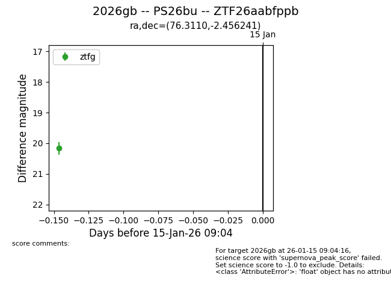
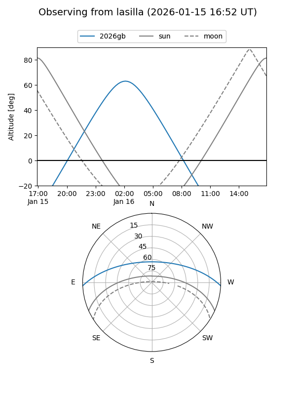
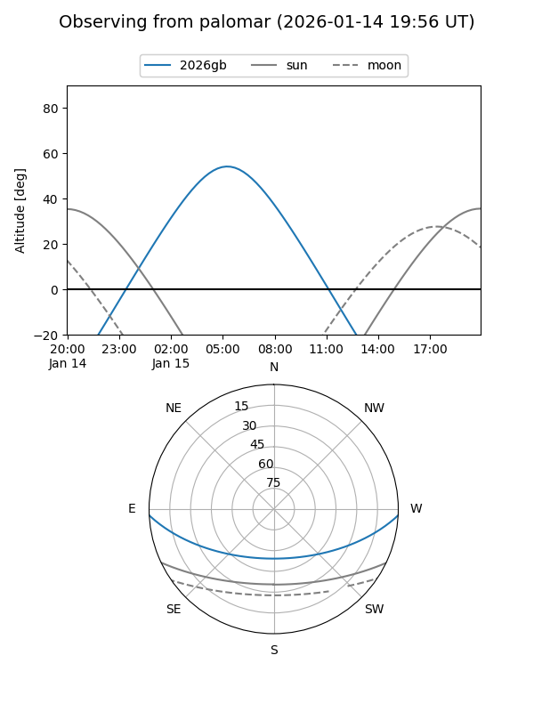
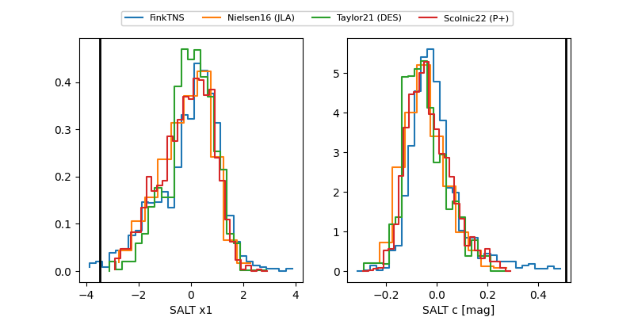

2026gb
Target 2026gb at 2026-01-15 09:05
Aliases and brokers:
FINK: link
Lasair: link
ALeRCE: link
TNS: link
YSE: link
alt names
ZTF26aabfppb (ztf,fink_ztf)
2026gb (tns,yse)
PS26bu (panstarrs)
Coordinates:
equatorial (ra, dec) = 76.3110,-2.45624
equatorial (HMS+DMS) = 05:05:14.65,-02:27:22.47
galactic (l, b) = (202.4424,-24.64282)
Flags:
Photometry:
last ztfg=20.16
1 ztfg detections
Lightcurve

Visibility


Additional plots
